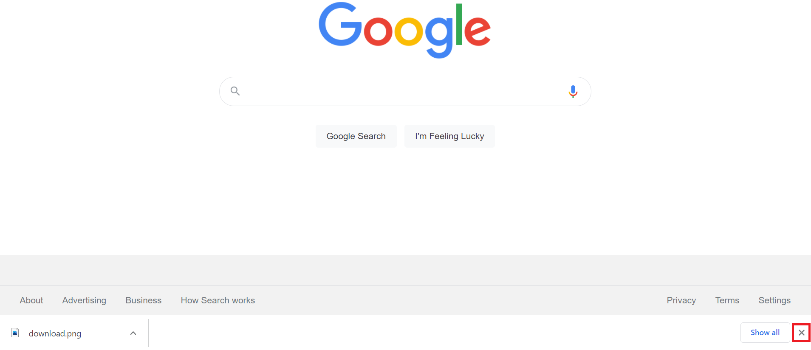

<!DOCTYPE html>
<html>

<head>
    <title>My experiment</title>
    <script src='js/jquery-2.1.1.min.js'></script>
    <script src="js/jspsych.js"></script>
    <script src="plugins/jspsych-resize.js"></script>
    <script src="plugins/jspsych-html-keyboard-response.js"></script>
    <script src="plugins/jspsych-instructions.js"></script>
    <script src="plugins/jspsych-survey-text.js"></script>
    <script src="plugins/jspsych-survey-multi-choice.js"></script>
    <script src="plugins/jspsych-fullscreen.js"></script>
    <script src="plugins/jspsych-html-button-response.js"></script>
    <script src="plugins/jspsych-html-slider-response.js"></script>

    <link href="css/my_exp.css" rel="stylesheet" type="text/css">
    <link href="css/jspsych.css" rel="stylesheet" type="text/css">
    <!--This experiment consists of three sessions.
    The first session is a change detection task and ICAR intelligence test, the second and third are a dual task of both change detection and two-armed bandit task.
     The code is based on jspsych package. Check the tutorials to understand what's going on here-->
<script
  src="https://browser.sentry-cdn.com/6.7.2/bundle.tracing.min.js"
  integrity="sha384-wOrLFfswE3wmvwEzqgo2kc7ksrFcx4ephHugBnWW3jY8ktO8xSi5Lny58pZSpovY"
  crossorigin="anonymous"
></script>
<script>
Sentry.init({
  dsn: "https://e930abb231a542d7b9b087bbdd7736ab@o879085.ingest.sentry.io/5831471",
  integrations: [new Sentry.Integrations.BrowserTracing()],
  // We recommend adjusting this value in production, or using tracesSampler
  // for finer control
  tracesSampleRate: 1.0,
});
    </script>
</head>
<style>
    /* all the css is in my_exp.css */
</style>

<body>
    <script>

        /*---------------------------------------------------- 
        Experiment starts
        ------------------------------------------------------*/
        var timeline = [];
        var welcome = {
            type: 'html-button-response',
            stimulus: '<p style="text-align: left">Welcome to the <b>third and final session</b> of the experiment.<br><br>This study, performed by Tel Aviv University, is aimed at gaining a better understanding of learning and memory processes. Your contribution may help our lab develop better clinical treatments.<br>'
                + "In this session of the study we will ask you to play a card game.<br> The experiment should take about <b>30 minutes</b>.<br><br>"
                + 'For your participation in this session, <b>you will earn £2.5, but may earn a bonus of up to £0.9 depending on your performance.</b><br>'
                + ' You are free to leave at any time by pressing ‘Esc’ and closing your browser but please note that full payment is provided only for full participation.<br> <b>Please be assured that all data is collected anonymously, and we will not keep any personal information besides your Prolific ID.</b><br>'
                + '<br><b>Restrictions:</b> You can only participate if you are aged 18 to 50 and are not currently diagnosed with depression, anxiety, epilepsy, learning disabilities, color blindness, or any other psychiatric or neurological disorders.'
                + '<br>Thank you for your participation and please feel free to contact us using the Prolific platform for any question you might have.',
            choices: ['I confirm that I read and accept the terms mentioned above']
        };
        //timeline.push(welcome) //45sec
        var zoom = {
            type: 'html-button-response',
            stimulus: '<p> Please make sure that your browser <b>zoom-in settings are on 100%</b> as shown in the picture.<br><br>'
                + ''
                + "You may change it by pressing the <b>+ or - signs or by pressing (Ctrl and + or -) on your keyboard</b>. <br><br> "
                + "Having <b>100% zoom is vital</b> for the experiment.<br>"
            ,
            choices: ['I confirm that my browser zoom-in settings are on 100% as shown in the picture']
        };
        timeline.push(zoom)
        var toolbar = {
            type: 'html-button-response',
            stimulus: '<p tyle="text-align: left"> Please make sure that your <b>browser downloads toolbar is closed</b> for the experiment to go well.<br>'
                + ''
                + 'In the picture above, you can see how to close the toolbar by <b>clicking the right-sided X button</b>.',
            choices: ['I confirm that my browser downloads toolbar is closed']
        };
        timeline.push(toolbar)

        timeline.push({
            type: 'fullscreen',
            fullscreen_mode: true,
            message: '<p>We will now move to fullscreen mode and start the instructions.</p>'
            , data: { screen_width: window.screen.width, screen_height: window.screen.height }
        });
        jsPsych.init({
            timeline: timeline,
<<<<<<< HEAD:replication_06_21/session3/welcome/index.html
  preload_images: ["images/zoom.png", "images/toolbar.png"],
=======

>>>>>>> 9e8faf3c259abb3bbdb31134dd79ce0f791a0b5a:replication_06_21/session3/welcome3/index.html
on_finish: function() {

console.log('here')
            $.ajax({
                type: 'POST',
                url: '/save',
                data: {'data': 
                    {
                        prolificId: localStorage.prolific,
                        screen: { screen_width: window.screen.width, screen_height: window.screen.height }
                    }
                },

                success: function() {
                    console.log('success');
                    document.location = '/next'
                 },

                 // Endpoint not running, local save
                 error: function(err) {
                    // alert
                  }
         });


            }
        });


    </script>
</body>

</html>